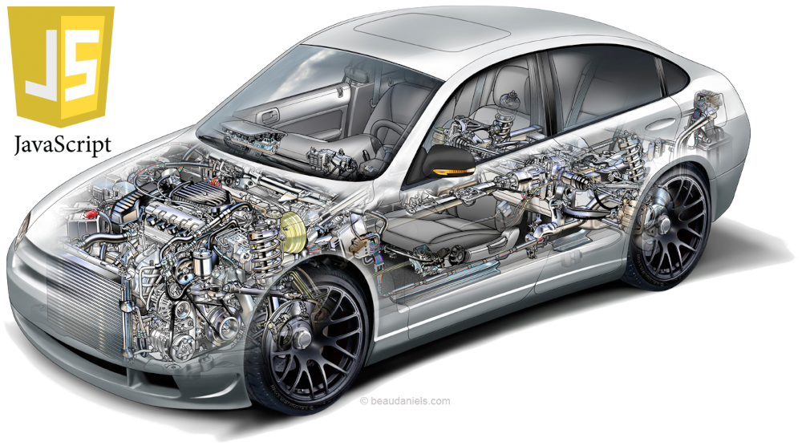
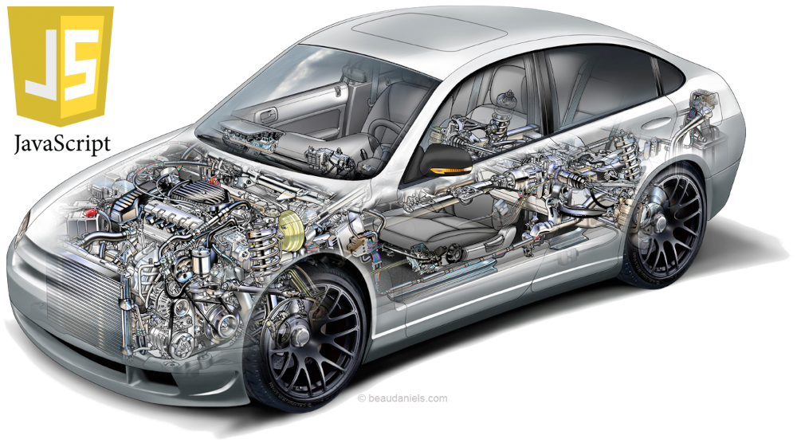

HTML - Hyper Text Markup Language (Linguagem de Marcação de Hipertexto)(rascunho)
Serve para introduzir o conteúdo da página web, tal como os textos e as mídias, adicionando toda a semântica dos mesmos. Dizendo o que é o cabeçalho, título, parágrafo, imagem, citações, quais são as frases fortes, e em destaque, dizer qual parte deve ser enfatizada, etc. Através das TAGS. Criando assim a estrutura do conteúdo da página.
Algumas tags não apresentam tag de fechamento, como no caso de <img src="https://google.com" alt="Site da Google"/>. Existem algumas que não possuem nem o / no final da tag. Isso porque todas as informações já estão contidas no atributo, ou seja, dentro da tag.
É o sucessor da linguagem SGML (Standard Generalized Markup Language, ou Linguagem Padrão de Marcação Generalizada), que usa colchetes angulares("<" e ">") para separar anotações do texto comum. Em HTML essas anotações são chamadas de "tags"
Não é uma linguagem de programação, e sim uma linguagem de marcação, como ja diz o nome. Então diz-se que se desenvolve em HTML
Elementos:
Elementos são as peças que compõem a linguagem HTML. O parágrafo (<p></p>) é um elemento, assim como a cabeça (<head></head>), o corpo(<body></body>), o título (<h1></h1>), o cabeçalho, etc.
Pai, filho e irmão:
Quando um elemento contém outro elemento, diz-se que ele é pai (parent).
Quando um elemento está contido em outro elemento, diz-se que ele é filho (child).
Quando dois elementos estão contidos nos mesmo elementos, diz-se que são irmãos (simblings)
Por exemplo:
html é pai de body, que por sua vez é pai de h1.
Quanado invertido, h1 é filho de body, que por sua vez é filho de html.
h1 é irmão de h2, pois estão ambos dentro de body, e um não está contido no outro.
Atributos:
É um jeito de definir melhor os elementos, podendo atribuir uma identificação única (id="Nome que queira dar"), agrupa-los em classes (class="Nome que queria dar"), definir uma lista ordenada para começar do número desejado (start="5"), e muitas outras coisas que queira incrementar à tag.
Por exemplo:<blockquote id="PoemaDosSetePassos" class="Poemas">
<pre>
Ramos secos de feijão queimam para cozinhar o grão.
No interior da panela, está o feijão a se lamentar.
"Se temos a mesma origem e crescemos juntos,
Por que agora há tanto sofrimento entre nós?"
<small>Cao Zhi</small>
</pre>
</blockquote>
Por meio do atributo id, o parágrafo passa a ter um identificador único, PoemaDosSetePassos, e por meio do atributo class passa a fazer parte da classe Poemas
*Os atributos id e class são muito importantes. Quando for fazer uso do CSS por exemplo. Você pode estilizar uma parte especifica da página usando-os
<ol start="5">
<li>Luz</li>
<li>Câmera</li>
<li>Ação</li>
</ol>
Por meio do atributo start, essa lista ordenada começará a partir do número 5.
O que define o valor do atributo, é chamado de valor mesmo.
A ordem em que os elementos se apresentam não altera o resultado final
Atributos Globais:
São os que podem ser usadas por qualquer tag, como por exemplo
Aqui temos uma lista dos atributos globais
Atributos Não Globais:
São os que não podesm ser usadas por qualquer tag, são usados por uma ou mais, mas não todas. Como por exemplo
Atributos booleanos:
São os que não possuem um valor, seu efeito surte do fato de ela estar ou não estar nas tags. Como por exemplo o atributo
 
